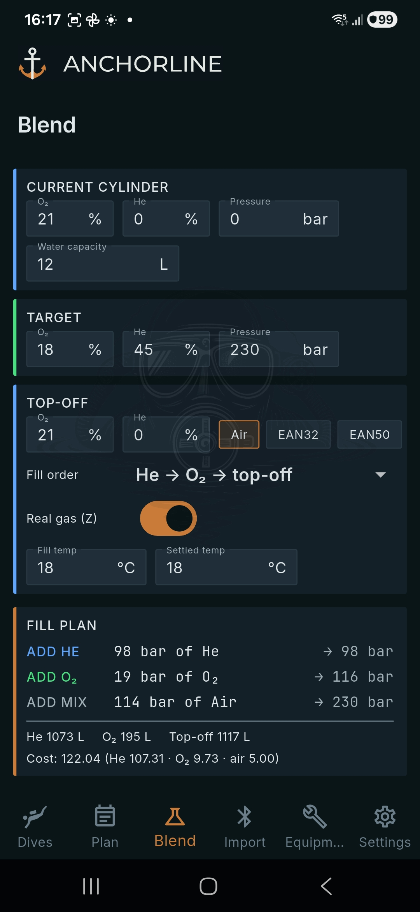
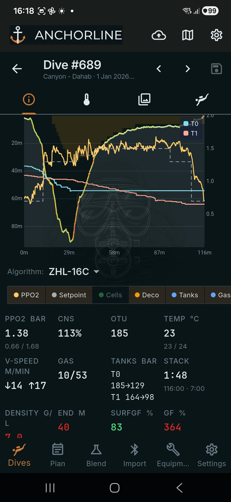
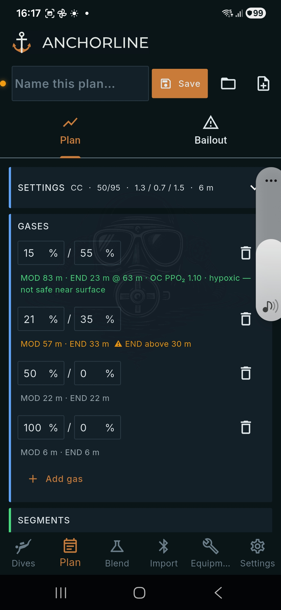

Dive logging built for CCR.
Imports your Shearwater over Bluetooth and shows you what the log is really saying: cell health, scrubber time, PPO₂ against setpoint.



Download for Windows
App Store
▶ Google Play
Mac App Store
Linux AppImage
What it does todayProfile with PPO₂, setpoint and cells · deco replay · cell-mV history · scrubber sessions · gas density and END · blender and planner · Subsurface import
Where it's going- Cell health across a cell's life next
- Two-way Subsurface sync next
- Other dive computers exploring
Free vs. SyncApp and all analysis free · sync, attachments and two-way Subsurface are the subscription
A · App first
Hero is a one-line pitch, three real screenshots and the download row. Then a "what it does today" tour that alternates screenshot and text, a roadmap, free-vs-paid, footer.